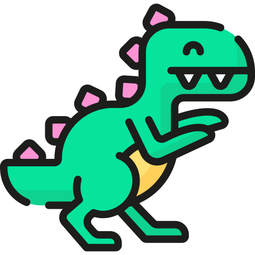
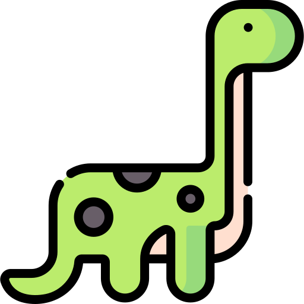
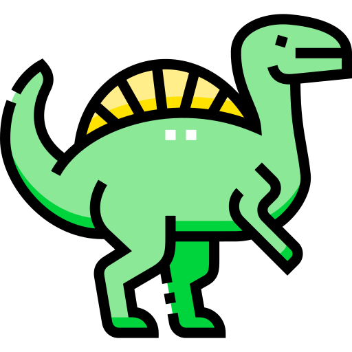
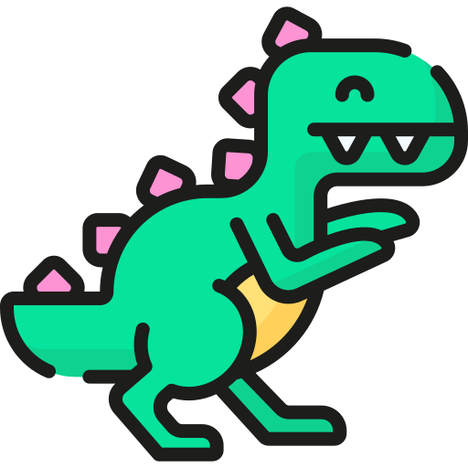
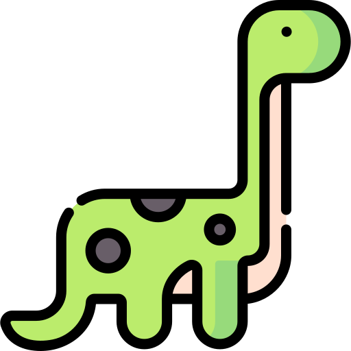
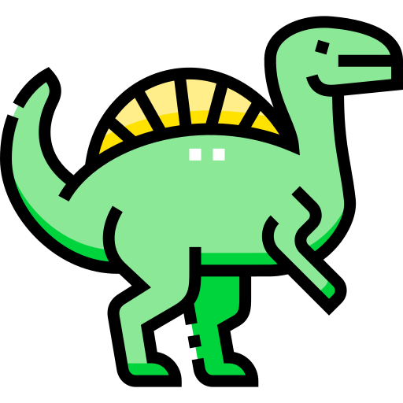

Olá, Tudo Bom? Eu sou Marcos Soares
➤ Sou um apaixonado por Python e suas automações, pensando no futuro em ter minha I.A, estou estudando Front-end e sou Acadêmico de Análise e Desenvolvimento de Sistemas, com experiência técnica em redes e habilidades de design gráfico freelancer.
➤ Meu entusiasmo pela programação e pela criação de interfaces atraentes me impulsiona a criar soluções inovadoras. Como estudante de análise e desenvolvimento de sistemas, estou constantemente buscando aprender e aprimorar minhas habilidades, adquirindo conhecimento de várias formas possíveis.
➤ Se você está procurando um profissional versátil, criativo e dedicado, estou aqui para colaborar e fazer a diferença.